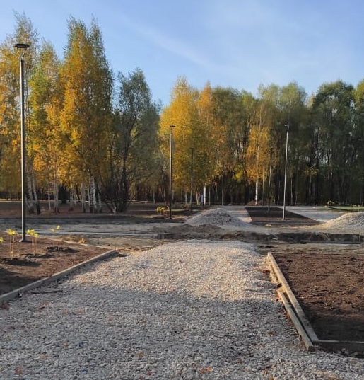

Главная новость
Новый парк откроется в этом году
В городе продолжается благоустройство. Появятся зоны отдыха, велодорожки и детские площадки.
Читать далее →
Проект предусматривает удобные пешеходные маршруты, освещение и озеленение.